1Acceso al sistema
1.1 Portal Índice
Todas las herramientas del sistema de créditos de OxoHotel se abren desde un portal de acceso único, llamado "Índice". Al entrar verás el título "Sistema de créditos OxoHotel" y tres tarjetas: Formulario de Solicitud (la que te corresponde como solicitante), Panel de Administración (uso exclusivo del equipo de Crédito y Cartera) y Consulta de Cupos de Crédito (uso exclusivo del equipo de Reservas).
Ubica la tarjeta "Formulario de Solicitud"
Tiene la etiqueta "Clientes y ejecutivos" y describe sus funciones: formulario guiado paso a paso, carga de documentos en PDF, firma digital con verificación OTP (código por correo) y seguimiento del estado de tu radicado.
Haz clic en "Acceder al formulario"
El botón abre el Formulario de Solicitud de Crédito en una pestaña nueva del navegador.
El botón circular de luna/sol, en la esquina superior derecha del portal, alterna entre modo claro y modo oscuro; es solo una preferencia visual y no afecta ninguna información.
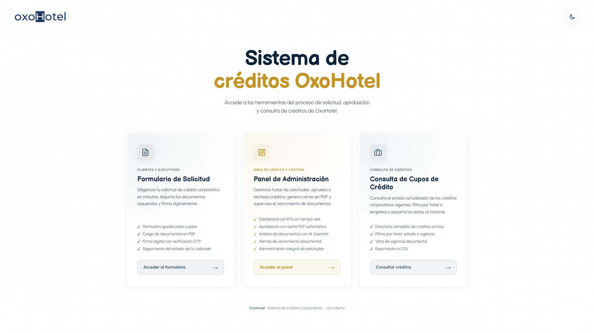

1.2 Abrir el Formulario
El formulario es público: no necesitas usuario ni contraseña para diligenciarlo. Al abrirlo por primera vez (o si no tienes un borrador guardado), lo primero que verás es la ventana de "Instructivo y Políticas de Crédito", que debes leer y aceptar antes de continuar (ver sección 3.1).
2Antes de empezar
Diligenciar la solicitud completa toma pocos minutos si tienes a la mano la siguiente información y documentos. Todos los documentos deben estar en formato PDF y pesar máximo 30 MB cada uno.
2.1 Información que debes tener lista
- Razón social, nombre comercial, NIT, dirección, ciudad, departamento y código postal de la empresa.
- Datos completos del representante legal: nombre, tipo y número de identificación, cargo, teléfono y correo electrónico (a este correo llegará el código de verificación, así que debe ser un correo al que el representante legal tenga acceso inmediato).
- Monto de crédito sugerido y el nombre del ejecutivo comercial / gerente de cuenta que gestiona la solicitud.
- Responsabilidad fiscal de la empresa (Gran contribuyente, Autorretenedor, Agente de retención IVA, Régimen simple, Responsable de IVA, o No responsable).
- Datos de contacto (nombre, teléfono, correo) de Tesorería, Cuentas por pagar y Dirección Financiera; opcionalmente también del contacto comercial.
- Información de facturación: fecha de corte para radicar facturas, documentos que exige tu empresa para radicarlas, si requieres inscripción como proveedor, y el correo de facturación electrónica.
2.2 Documentos que debes tener escaneados en PDF
| Documento | Tipo | Detalle |
|---|---|---|
| Certificado de existencia y representación legal | Obligatorio | Procura usar el más reciente posible. |
| Copia de la cédula (o cédula de extranjería) del representante legal | Obligatorio | — |
| Copia del último RUT generado, completo (todas las hojas) | Obligatorio | No mayor a 30 días. |
| Estados financieros de los 2 últimos años | Obligatorio | Puedes adjuntar hasta 3 archivos; si no puedes aportarlos, existe una alternativa (ver sección 3.5). |
| Declaración de renta del último año gravable | Opcional | — |
| Carta justificando la ausencia de estados financieros | Opcional | Firmada por el representante legal, vigencia ≤ 6 meses. Solo si no puedes aportar los estados financieros. |
3Diligenciar la solicitud
El formulario está organizado como un asistente ("wizard") de 5 pasos, visibles en la parte superior de la pantalla: Tipo, Empresa, Contactos, Documentos y Confirmar. Una barra de progreso dorada avanza a medida que completas cada paso, y puedes retroceder con el botón "Atrás" en cualquier momento sin perder lo ya digitado.
3.1 Instructivo y políticas de crédito
Antes de mostrar el Paso 1, el formulario abre una ventana obligatoria titulada "Instructivo y Políticas de Crédito", con el encabezado "OxoHotel Hospitality Management Group". Debes leerla antes de continuar; resume:
- ¿Quiénes pueden solicitar crédito? Solo personas jurídicas legalmente constituidas, con domicilio principal o sucursal en Colombia. No se otorgan créditos a personas naturales, empresas extranjeras o sin representación legal vigente.
- Documentos obligatorios en PDF: los mismos listados en la sección 2.2.
- Condiciones generales del crédito: anticipo obligatorio del 30% en eventos (ningún evento se factura 100% a crédito), plazo único de pago de 30 días calendario desde la radicación de la factura, y vigencia del cupo aprobado de 1 año, tras el cual se debe actualizar toda la documentación.
- Tiempos de respuesta: el estudio de crédito tarda hasta 15 días hábiles, contados solo desde que la documentación esté completa y sin observaciones.
Al final de la ventana debes marcar dos casillas obligatorias antes de que se habilite el botón "Aceptar y continuar":
- Declaración de haber leído, comprendido y aceptado las políticas, condiciones y validaciones del proceso de crédito corporativo.
- Autorización de tratamiento de datos personales según las políticas de OxoHotel (con enlace a la política publicada en oxohotel.com).
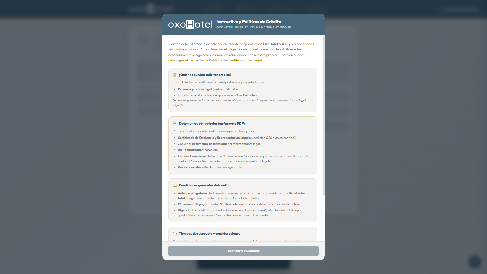
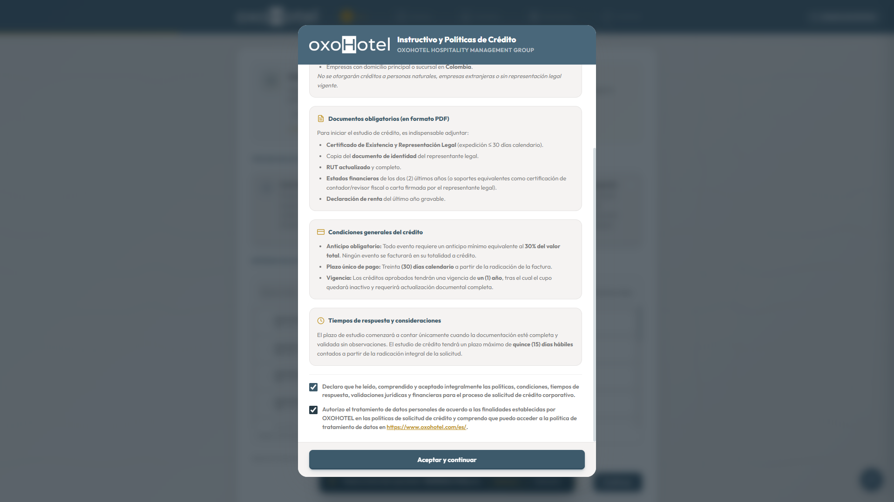
3.2 Paso 1 — Tipo de solicitud y hoteles
Título de la pantalla: "Iniciar solicitud de crédito". Aquí defines qué tipo de trámite necesitas y para cuáles hoteles de la cadena aplica.
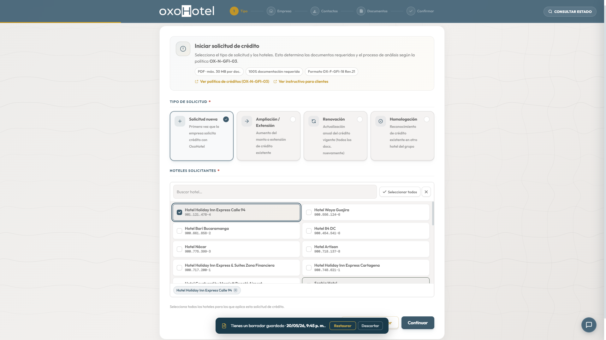
Tipo de solicitud
Selecciona una de las cuatro tarjetas (selección única, campo obligatorio):
| Tarjeta | Cuándo usarla |
|---|---|
| Solicitud nueva | Primera vez que la empresa solicita crédito con OxoHotel. |
| Ampliación / Extensión | Aumento del monto o extensión de un crédito existente. |
| Renovación | Actualización anual del crédito vigente (se deben adjuntar todos los documentos nuevamente). |
| Homologación | Reconocimiento de un crédito ya existente en otro hotel del grupo. |
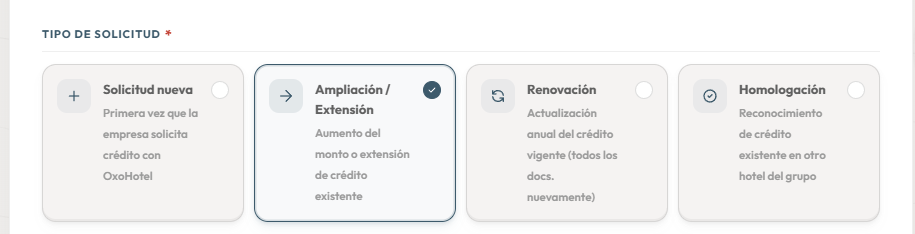
Hoteles solicitantes
Marca uno o varios hoteles de la lista (campo obligatorio). Puedes usar el buscador "Buscar hotel...", el botón "Seleccionar todos", o el botón "✕" para limpiar la selección. Cada hotel elegido aparece como una etiqueta ("chip") debajo de la lista, con una "✕" para quitarlo individualmente.
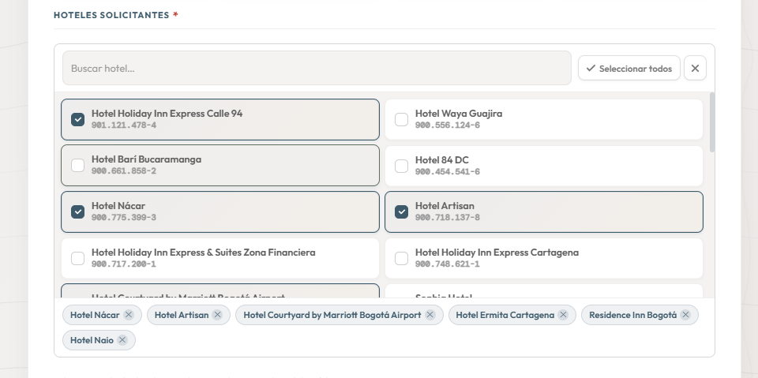
3.3 Paso 2 — Información básica de la empresa
Título: "Información básica de la empresa", con la nota: "Datos que serán verificados y bajo los cuales se emitirán las facturas." Es el paso más extenso; está dividido en cuatro bloques.
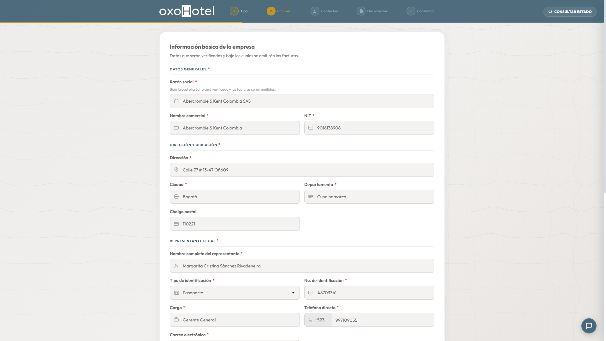
Datos generales y dirección
- Razón social*: la empresa bajo la cual se verificará el crédito y se emitirán las facturas.
- Nombre comercial* y NIT* (el NIT solo admite números, sin puntos ni guion).
- Dirección*, Ciudad* y Departamento*.
- Código postal (opcional, solo números).
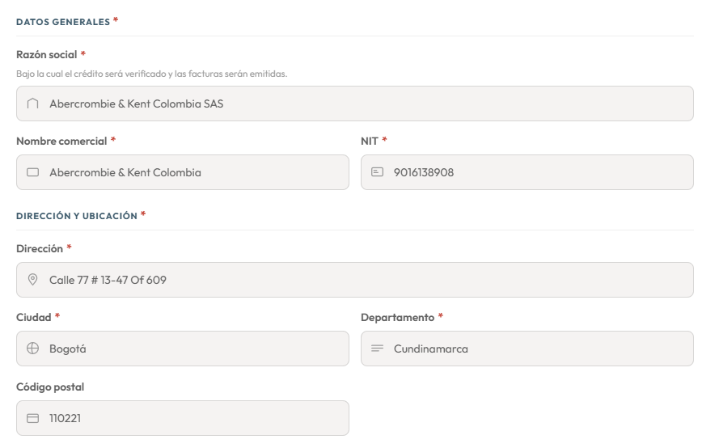
Representante legal
Nombre completo, tipo de identificación (Cédula de ciudadanía, Cédula de extranjería, NIT o Pasaporte), número de identificación, cargo, teléfono directo (con indicativo de país editable, por ejemplo "+57") y correo electrónico. Este correo es al que se enviará el código de verificación de identidad más adelante, así que debe ser correcto y de acceso inmediato para el representante legal.
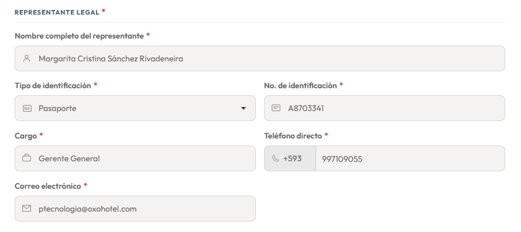
Monto, ejecutivo y fecha
El campo "Monto sugerido por gerente de cuenta" se diligencia en pesos colombianos (prefijo "COP"); tiene un menú desplegable con montos frecuentes ($5.000.000 / $10.000.000 / $15.000.000 / $20.000.000 / $30.000.000 / $50.000.000) que puedes usar como referencia rápida, o escribir el valor exacto. El campo "Ejecutivo comercial" se busca por nombre o correo en un listado desplegable. La fecha de diligenciamiento se completa sola con la fecha del día y no se puede editar.
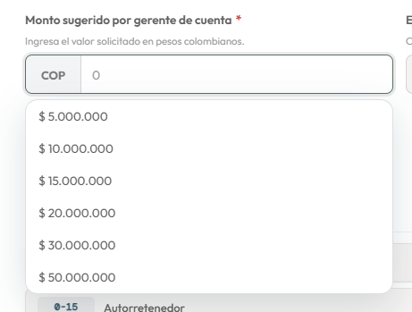
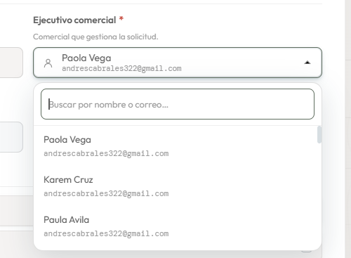
Responsabilidad fiscal*
Marca al menos una opción (obligatorio):
| Código | Responsabilidad |
|---|---|
| 0-13 | Gran contribuyente |
| 0-15 | Autorretenedor |
| 0-23 | Agente de retención IVA |
| 0-47 | Régimen simple de tributación |
| 48 | Impuesto sobre las ventas (IVA) |
| R-99-PN | No responsable |
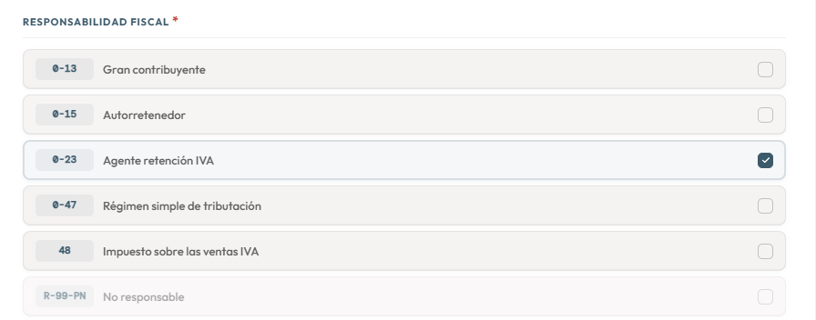
3.4 Paso 3 — Contactos y facturación
Título: "Contactos y facturación", con la nota: "Personas de contacto en cada área y datos para radicación de facturas."
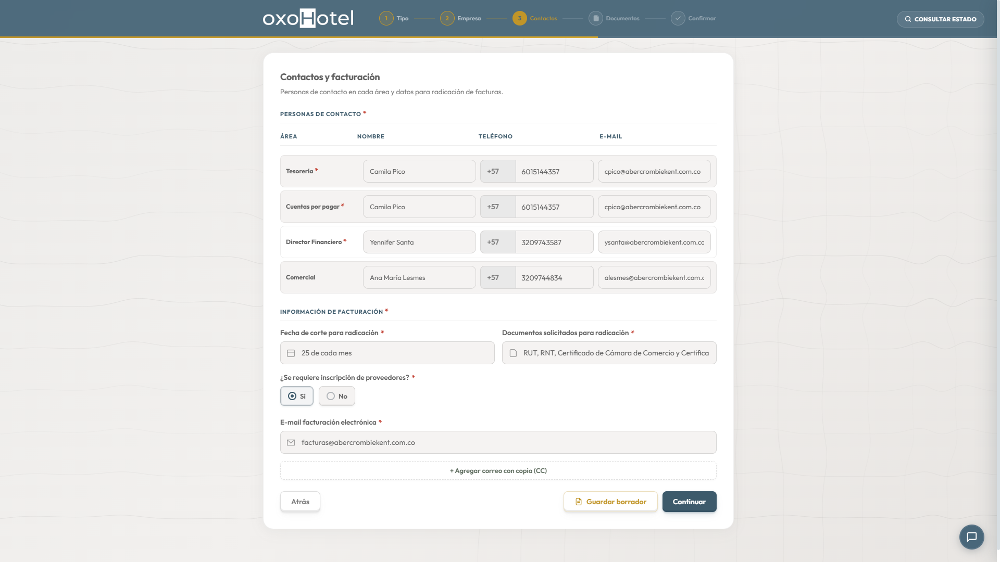
Personas de contacto
Completa nombre, teléfono y correo para cada área. Tesorería, Cuentas por pagar y Director Financiero son obligatorios; el contacto Comercial es opcional.
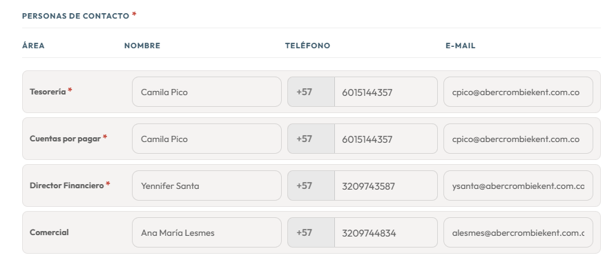
Información de facturación
- Fecha de corte para radicación*: puede escribirse en texto libre (ej: "25 de cada mes" o "último día hábil del mes").
- Documentos solicitados para radicación*: qué documentos exige tu empresa para tramitar el pago de las facturas del hotel.
- ¿Se requiere inscripción de proveedores?*: Sí / No (por defecto "No").
- E-mail de facturación electrónica*, y opcionalmente un correo con copia (CC) adicional mediante el botón "+ Agregar correo con copia (CC)".
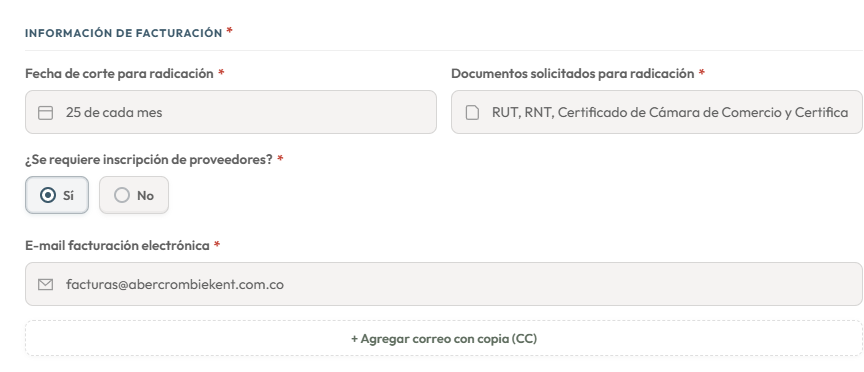
3.5 Paso 4 — Documentos
Título: "Documentos requeridos". Aquí adjuntas los soportes descritos en la sección 2.2. Un aviso amarillo recuerda: "Los documentos ilegibles, sin firmar o incompletos serán devueltos."
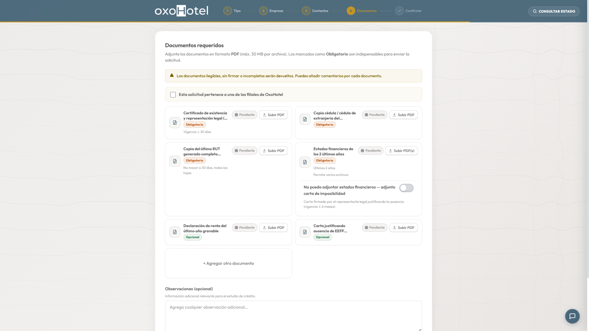
Cada documento aparece como una tarjeta con su nombre, un estado ("Pendiente" o, tras subirlo, "✓ Listo") y un botón "Subir PDF" (que cambia a "Cambiar PDF" una vez cargado el archivo). Las tarjetas obligatorias muestran la etiqueta naranja Obligatorio y las opcionales la etiqueta verde Opcional.
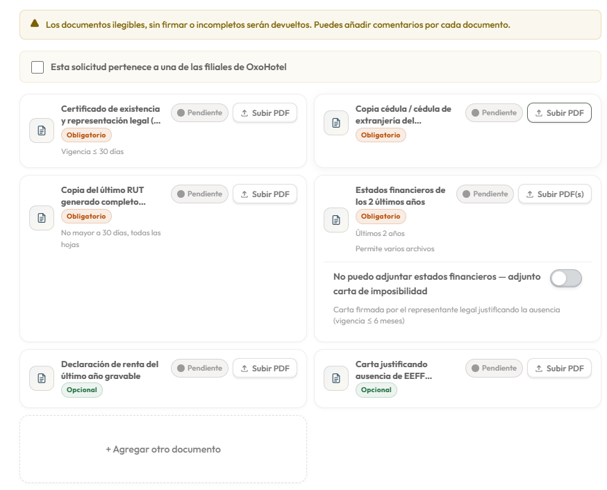
Fecha de expedición del certificado
Al subir el Certificado de existencia y representación legal, se habilita un campo adicional obligatorio: "Fecha de expedición del certificado", con un calendario para seleccionarla. El sistema no permite fechas futuras ni certificados demasiado antiguos.
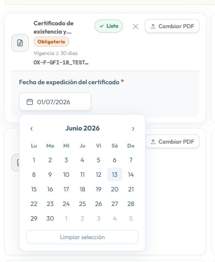
Si no puedes adjuntar los estados financieros
En la tarjeta de "Estados financieros de los 2 últimos años" hay un interruptor: "No puedo adjuntar estados financieros — adjunto carta de imposibilidad". Al activarlo, la tarjeta cambia su título a "Carta de imposibilidad de entrega de estados financieros" y te pide subir esa carta en su lugar (firmada por el representante legal, con vigencia máxima de 6 meses) y su fecha de expedición.
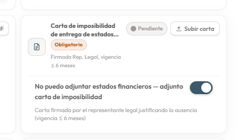
Documentos opcionales y observaciones
Debajo de los documentos obligatorios encontrarás los opcionales (Declaración de renta y Carta de ausencia de EEFF) y el botón "+ Agregar otro documento", que permite anexar hasta 2 documentos adicionales no contemplados en la lista. Al final del paso hay un campo de "Observaciones" (opcional, máximo 1000 caracteres) para cualquier aclaración relevante para el estudio de crédito.
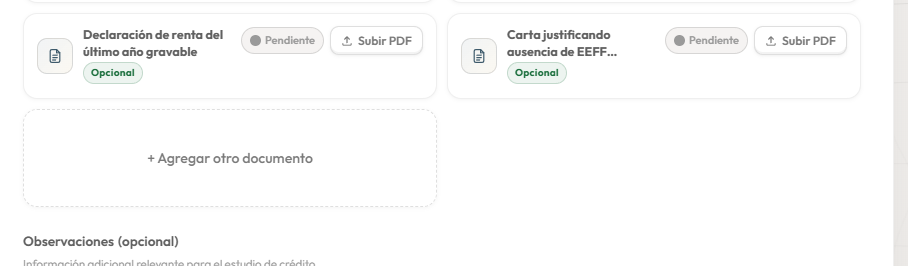
3.6 Paso 5 — Confirmación y envío
Título: "Confirmación y envío", con la nota: "Verifica la información antes de enviar. Una vez enviado, la solicitud ingresa al área de créditos para análisis." Este paso muestra un resumen completo de todo lo digitado, agrupado en cuatro bloques: Solicitud (tipo, hoteles, monto), Empresa (razón social, NIT, representante, correo, ejecutivo, fecha), Documentos (cuántos obligatorios adjuntaste, ej. "4 de 4 obligatorios") y Verificación (estado del código de identidad, inicialmente "Pendiente de verificación").
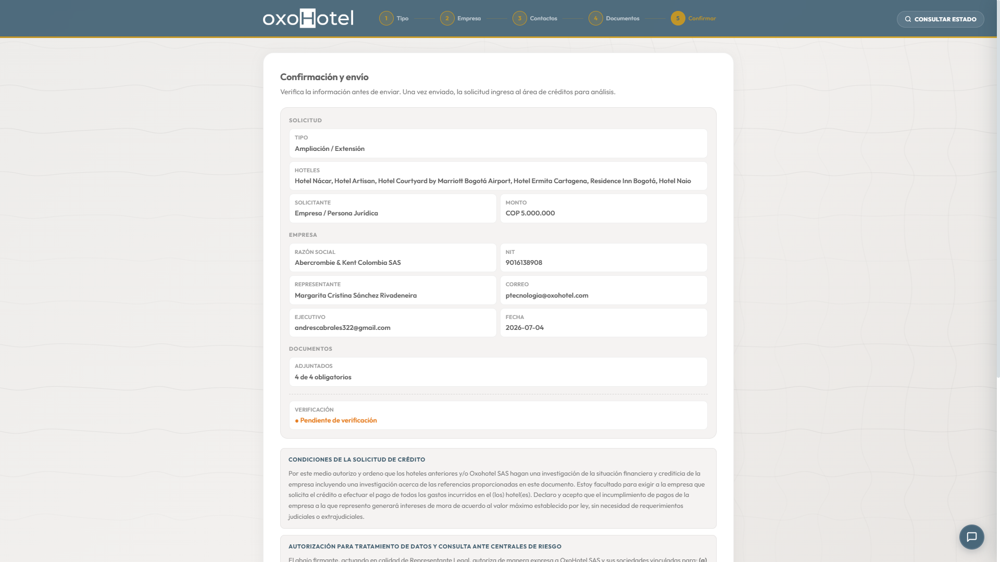
Condiciones y autorización de datos
Debajo del resumen aparecen dos bloques legales completos que debes leer: "Condiciones de la solicitud de crédito" (autorización para investigar la situación financiera y crediticia de la empresa, y aceptación de intereses de mora en caso de incumplimiento) y "Autorización para tratamiento de datos y consulta ante centrales de riesgo" (autorización para consultar y reportar el comportamiento crediticio ante centrales de riesgo, conforme a la Ley 1266 de 2008, la Ley 2157 de 2021 y la Ley 1581 de 2012).
Debes activar el interruptor de aceptación: "Acepto los términos, condiciones y autorizo el tratamiento de datos personales, consulta y reporte ante centrales de riesgo. Bajo gravedad de juramento manifiesto que todos los datos consignados son verídicos y verificables." Sin esta aceptación, el sistema no permite enviar la solicitud.
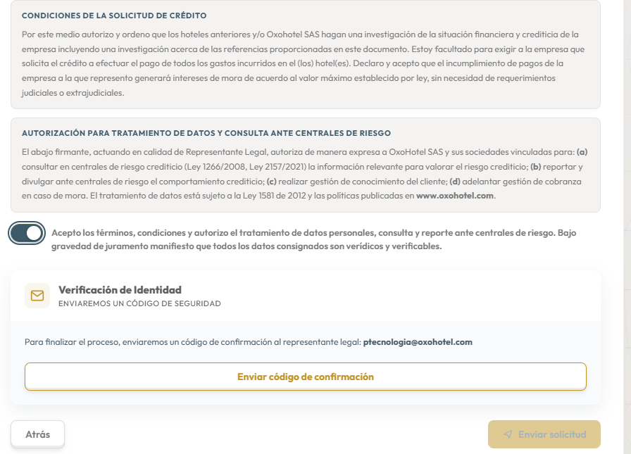
El botón "Enviar solicitud" permanece deshabilitado (en color atenuado) hasta que aceptes los términos y verifiques tu correo, como se explica a continuación.
4Verificación de identidad
Como último requisito antes de enviar, el sistema confirma que quien radica la solicitud tiene acceso al correo del representante legal registrado en el Paso 2. Esta verificación reemplaza a una firma física.
Presiona "Enviar código de confirmación"
En el recuadro "Verificación de Identidad" del Paso 5 verás el correo al que se enviará el código (el correo electrónico del representante legal). Presiona el botón para enviarlo.
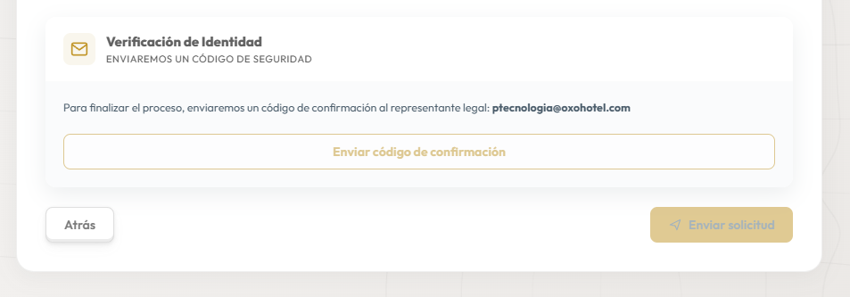
Revisa el correo del representante legal
Llegará un correo de "OxoHotel – Area de credito y cartera" con el asunto "Código de verificación – Solicitud de Crédito OxoHotel", con un código de 6 caracteres en mayúsculas (letras y números, sin usar los caracteres ambiguos O, 0, I, 1 para evitar confusiones).
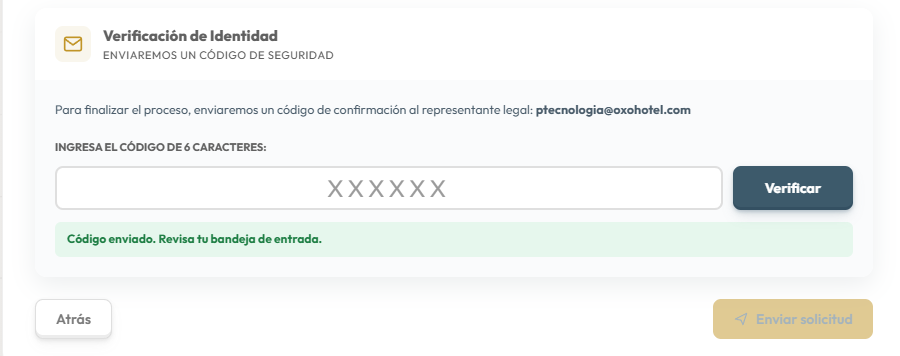
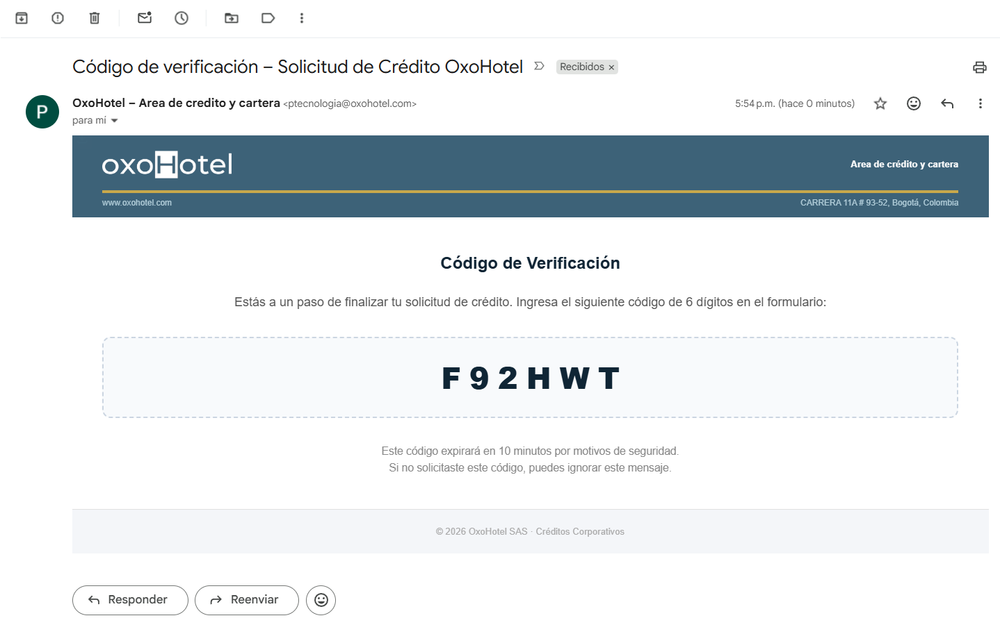
Escribe el código y presiona "Verificar"
Si el código es correcto, el recuadro cambia a un mensaje de éxito en verde: "Identidad Verificada — Código validado correctamente. Puedes enviar la solicitud." El botón "Enviar solicitud" se habilita de inmediato.
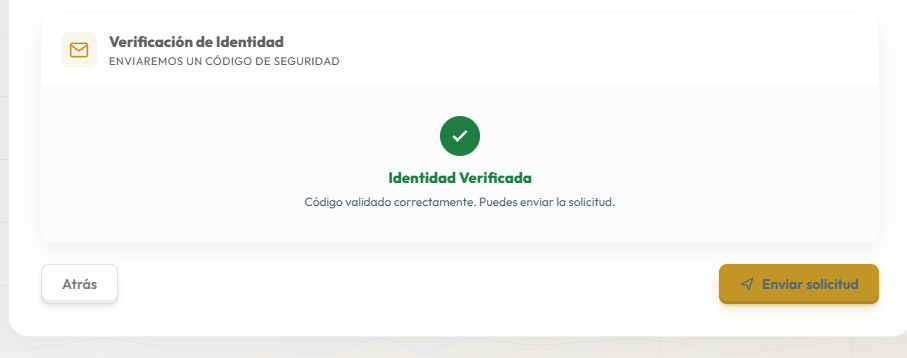
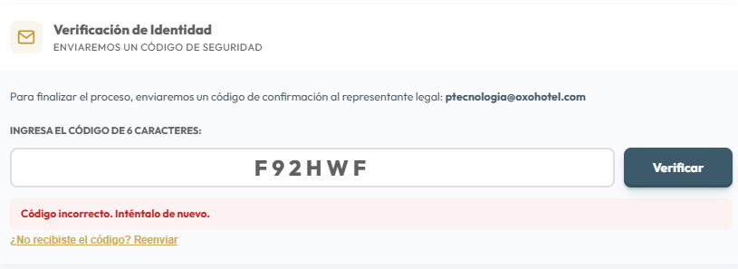
5Envío y confirmación
Con los términos aceptados y la identidad verificada, presiona "Enviar solicitud". No cierres la pestaña del navegador mientras el sistema procesa la información y sube los documentos.
Espera mientras se registra la solicitud
Aparece la ventana "Enviando solicitud" con una barra de progreso y el aviso: "Por favor no cierres esta pestaña mientras se procesan los archivos." El progreso avanza mientras se registran los datos y se suben los documentos.
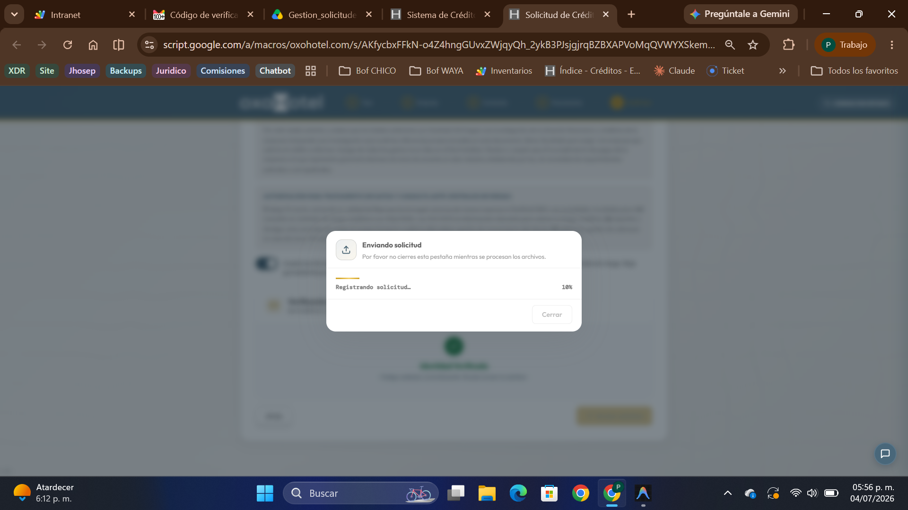
Anota el código de radicado
Al terminar, la barra llega al 100% y el título cambia a "¡Solicitud enviada!",
mostrando el código de radicado de tu solicitud (por ejemplo,
20260704-AMP-ABERCROMBI-95B6) y el aviso "Recibirás respuesta por correo
electrónico." Presiona "Cerrar" para terminar.
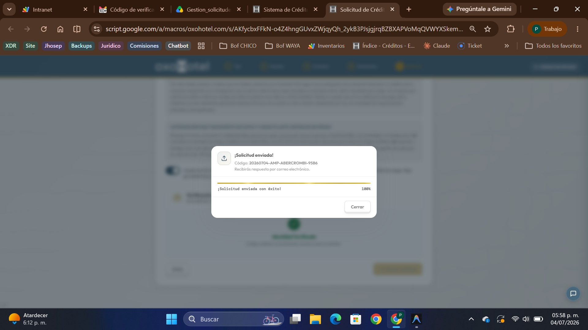
Qué recibes por correo
El representante legal recibe automáticamente un correo de confirmación de "OxoHotel – Area de credito y cartera", con asunto "Solicitud de crédito recibida – {razón social}". Indica que la solicitud fue recibida correctamente y que el área de Crédito y Cartera revisará la documentación en un tiempo promedio de 5 días hábiles.
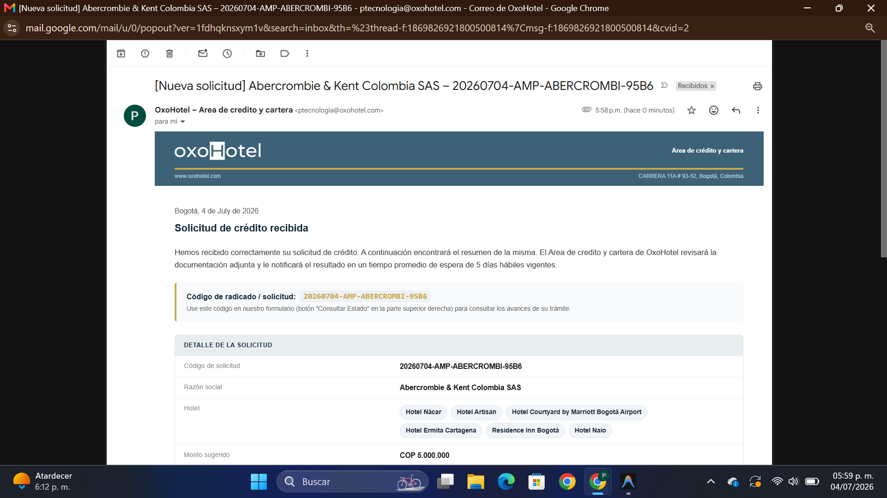
El correo incluye, además:
- Un recuadro destacado con el código de radicado, y la indicación de usar ese código en el botón "Consultar Estado" del formulario para hacer seguimiento.
- Una tabla de detalle de la solicitud: código, razón social, hotel(es) seleccionados y monto sugerido.
- El PDF de la solicitud diligenciada adjunto, con el formato completo que enviaste, para tus registros.
- Una nota indicando que, ante dudas o correcciones, puedes responder al correo o escribir directamente a creditos@oxohotel.com.
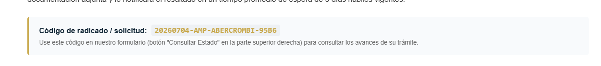
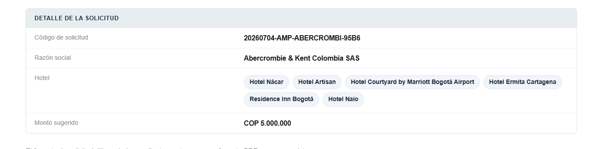
6Consultar el estado de mi solicitud
En cualquier momento, incluso antes de terminar de radicar una nueva solicitud, puedes revisar en qué va una solicitud ya enviada.
Haz clic en "Consultar Estado"
Este botón, con ícono de lupa, está siempre visible en la esquina superior derecha del encabezado del formulario, en cualquiera de los 5 pasos.
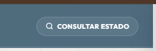
Ingresa tu código de radicado
Se abre un panel lateral titulado "Consultar Estado de Solicitud". Escribe
allí el código de radicado que recibiste por correo (ejemplo:
20260526-AMP-VARICHEM-B883) y presiona "Buscar". No necesitas
ingresar tu correo ni ningún otro dato: el código de radicado es suficiente.
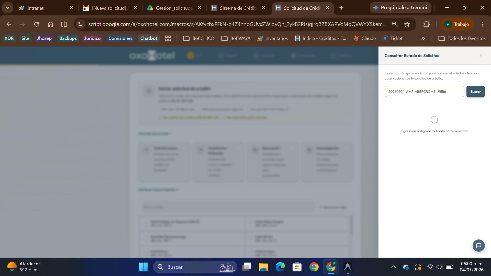
Revisa el resultado
Si el código existe, verás la razón social, el radicado, un distintivo de color con el estado actual y la fecha de envío. Si el área de crédito dejó alguna nota, aparecerá también un bloque de "Observaciones de Crédito".
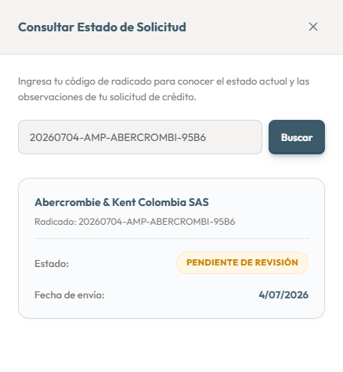
Los estados que puedes ver son:
| Estado mostrado | Significado |
|---|---|
| Borrador | La solicitud quedó registrada pero aún no se completó ni se envió formalmente. |
| Pendiente de revisión | La solicitud fue enviada y espera a ser tomada por el área de Crédito y Cartera. |
| En análisis | El área de Crédito y Cartera está evaluando la documentación. |
| Observada | Se encontró algún inconveniente y requiere una acción de tu parte (revisa las observaciones). |
| Aprobada | El crédito fue aprobado. |
| Rechazada | La solicitud no fue aprobada. |
7Preguntas frecuentes (chatbot)
En la esquina inferior derecha de cualquier pantalla del formulario encontrarás un ícono flotante de chat. Al hacer clic se abre el "Asistente de Créditos" de OxoHotel, un chatbot que responde dudas sobre el proceso de solicitud, los requisitos, la documentación y las políticas de crédito, y que saluda con: "¡Hola! Soy tu Asistente de Créditos de OxoHotel. ¿En qué puedo ayudarte hoy?"
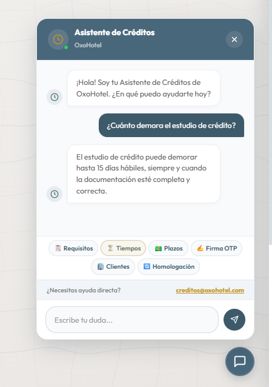
Solo pueden solicitar crédito personas jurídicas constituidas en Colombia (no personas naturales ni empresas extranjeras sin representación local). Los documentos en PDF requeridos son: RUT reciente, Certificado de Existencia y Representación Legal reciente, cédula del representante legal, Estados Financieros de los últimos 2 años y Declaración de Renta del último año.
Hasta 15 días hábiles, contados desde que la documentación esté completa y validada sin observaciones.
Todo evento requiere un anticipo obligatorio del 30% (ningún evento se factura 100% a crédito). El plazo de pago es de 30 días calendario tras la radicación de la factura, y los cupos aprobados tienen una vigencia de 1 año, después de la cual se debe renovar la documentación.
El representante legal "firma" digitalmente la solicitud mediante un código de verificación (OTP) que llega a su correo electrónico al finalizar el formulario, como se explica en la sección 4 de este manual.
Únicamente personas jurídicas legalmente constituidas, con domicilio principal o sucursal en Colombia y representación legal vigente.
Es el reconocimiento de un crédito que la empresa ya tiene aprobado en otro hotel del grupo OxoHotel, para poder usarlo también en un hotel adicional sin repetir todo el estudio desde cero.